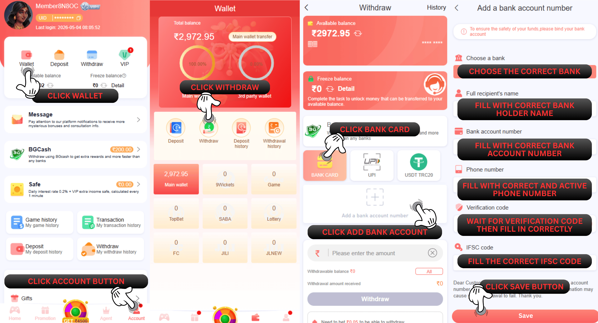
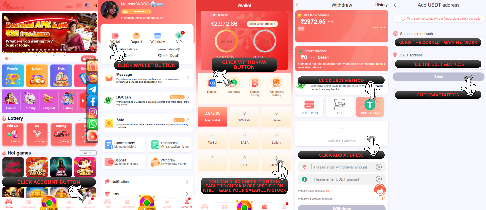

66 Lottery से पैसे कैसे निकाले
A. बैंक कार्ड विधि
आपको सबसे पहले अपना कार्ड लिंक करना होगा, निकासी मेनू पर जाएँ और इन चरणों का पालन करें :
1.बैंक खाता जोड़ें पर क्लिक करें
2.वह बैंक चुनें जिसके साथ आप रजिस्टर करना चाहते हैं
3.सभी आवश्यक जानकारी सही ढंग से भरें (आपका पूरा नाम, बैंक खाता संख्या, सक्रिय फ़ोन नंबर, ईमेल पता और IFSC कोड)
4.सहेजें पर क्लिक करें और SMS सत्यापन मेनू दिखाई देगा
5.भेजें बटन पर क्लिक करें
6.सही OTP कोड भरें
7."पुष्टि जोड़ें" बटन पर क्लिक करें
नोट : कृपया अपने बैंक खाते में जानकारी भरते समय अपनी जानकारी की सटीकता की पुष्टि करना सुनिश्चित करें, विशेष रूप से IFSC कोड (IFSC आपके बैंक का शाखा कोड है जो USDT पते के समान है)। आप ग्राहक सेवा बैंक पर अपनी बैंक जानकारी देख सकते हैं या जाँच करने के लिए APP से बैंक दर्ज कर सकते हैं।
यदि बैंक की जानकारी गलत भरी गई तो इससे आपकी निकासी में समस्या आएगी!
1.USDT विधि पर क्लिक करें
2.पता USDT पर क्लिक करें
3.मुख्य नेटवर्क “TRC” चुनें
4.USDT पता भरें
5.पता उपनाम पर फिर से USDT पता भरें
6.सहेजें पर क्लिक करें और SMS सत्यापन मेनू दिखाई देगा
7.भेजें बटन पर क्लिक करें
8.सही OTP कोड भरें
9.पुष्टि जोड़ें” बटन पर क्लिक करें
आपको सबसे पहले अपना कार्ड लिंक करना होगा, निकासी मेनू पर जाएँ और इन चरणों का पालन करें :

नोट : कृपया अपने बैंक खाते में जानकारी भरते समय अपनी जानकारी की सटीकता की पुष्टि करना सुनिश्चित करें, विशेष रूप से IFSC कोड (IFSC आपके बैंक का शाखा कोड है जो USDT पते के समान है)। आप ग्राहक सेवा बैंक पर अपनी बैंक जानकारी देख सकते हैं या जाँच करने के लिए APP से बैंक दर्ज कर सकते हैं।
यदि बैंक की जानकारी गलत भरी गई तो इससे आपकी निकासी में समस्या आएगी!
B. यूएसडीटी विधि
USDT पता बाँधने के लिए, निकासी मेनू पर जाएँ और इन चरणों का पालन करें : 